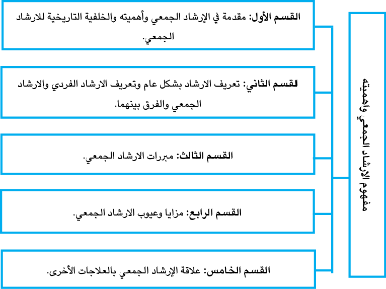

عزيزيَ الطالب
كما هو معروف أنَّ الإنسان كائنٌ اجتماعيٌّ بطبعه، وانطلاقا من هذه القاعدة تأتي أهمِّيَّة الإرشاد الجَمْعيّ؛ إذ تنطلق فلسفة الإرشاد الجَمْعيّ من أنَّ كلَّ فردٍ يشتركُ سلوكيًّا مع غيره في كثير من خصائص السلوك وأنماطه، فعلى الرَّغم من أنّه فريد في بعض أنماط سلوكه، فأِنَّه مماثلٌ لغيره في بعض أنماط السلوك الأُخرى.
ويجعلُ هذا النوع من الإرشاد المُسترشدينَ مِحورَ العمليَّة الإرشاديّة، وأنهَّم مسؤولون بالدرجة الأولى عن حركة المجموعة، والأهداف التي تسعى إلى تحقيقها.
إنَّ معظم الخبرات التي تَحدُث للفرد تأتي من مواقفَ اجتماعيَّةٍ يتعرَّضُ لها ضمن الجماعة التي يعيش فيها، فهو يشترك سلوكيًّا مع غيره في كثير من خصائص السلوك وأنماطه، وهو فريد في بعض الأنماط السلوكيّة الأُخرى عن غيره. كما أنَّ الإرشــــاد الجَمْعــــيّ وقـــــائيٌّ؛ إذ إنَّــــه يســــمح للفــــرد أنْ يحـلَّ الصعوبات التي تُسبِّبُ له القـلق قبل أنْ تزداد، وأيضا - من الممكن القول- إنَّه علاجيٌّ؛ إذ يكون مناسبا للذين تطـوَّرتْ لـديهم المشـاكل، وبـذلك، يكون الإرشاد الجَمْعيّ عمليّة أو إجراءً يتدخل في تغيير السُّلوك.
ويعودُ قبول المَدخل الجَمْعيّ إلى كونه أكثر فعاليّة منَ المَدخل الفرديّ، وهذه الفعالية تَنْبُعُ من الحقيقة التي مُؤدَّاها: أنَّ أعضاءَ المجموعة يكتسبونَ استبصاراً، وليس هذا فحسب، ولكنَّهم يمارسون - أيضا ً- مهاراتٍ جديدةً داخل المجموعة، ومن تفاعلاتهم اليوميَّة خارج المجموعة، بالإضافة إلى ذلك، فإنَّ أعضاءَ المجموعة يستفيدون منَ التَّغذية الرَّاجعة، ومن خِبْرات أعضاء المجموعة الآخرين، كما تُتيحُ المجموعةُ فُرَصًا عديدةً للنَمْذجة، ويمكن أنْ يتعلَّمَ الأعضاءُ كيف يُجابهونَ مشكلاتِهم من خلال ملاحظة الآخرين.
وسنتناول في هذه الوَحْدَةِ مفهومَ الإرشادِ الجَمْعيّ وأهمِّيَّته ومُبرراته وعيوبه، كما سنتطرق إلى الفرق بين الإرشاد الفرديّ والجَمْعيّ.
|
الهدف الأساس للإرشاد الجَمْعيّ هو توافق الفرد مع نفسه أولا، ومِنْ ثَمَّ، مع البيئة من حوله. |
|

2.1 الهدف العام للوَحْدة الدراسيَّة
|
عزيزيَ الطالبَ يُتوقَّع منك، بعد دراستك للوَحْدة الدِّراسيَّة، أنْ تتمكَّنَ مِن: توضيح مفهوم الإرشاد الجَمْعيّ وأهمِّيَّته توضيحًا خاصًّا من خلال: أ - دراسة مقدمة في الإرشاد الجَمْعيّ. ب- التَّعرُّف إلى الإرشاد الجَمْعيّ، والإرشاد الفرديّ، ومعرفةِ الفرق بينهما. ج - التَّعرُّف إلى مبررات الإرشاد الجَمْعيّ ومميزاته. د- معرفة عيوب الإرشاد الجَمْعيّ. |
|
- عزيزيَ الطالبَ - وِفْقًا للهدف العام للوَحْدة، وبعد دراستك لها، يُتوقَّعُ منك تحقيق النواتج التعليمة الآتية: إدراك مفهوم الإرشاد الجَمْعيّ. توضيح أهمِّيَّة الإرشاد الجَمْعيّ. التَّفريق بين الإرشاد الفرديّ والإرشاد الجَمْعيّ. توضيح مبررات الإرشاد الجَمْعيّ. التَّعرُّف إلى عيوب الإرشاد الجَمْعيّ ومزاياه |
4.1 الموارد والقراءات المساندة
|
عزيزيَ الطالبَ أثناء دراستك لهذه الوَحْدة، قد تَجِدُ أنَّكَ بحاجةٌ ماسّةٌ إلى مزيدٍ منَ التَّوضيحات والمعلومات حول ما جاء فيها من أفكار ومفاهيم، يمكنك عندئذٍ الرجوع إلى الموارد والمراجع الآتية: مصادر إلكترونية: صفحة المقرر الكتروني: الخطة والعروض التقديمية والوسائط المتعددة |
|
مصادر أخرى: الصفوف الافتراضيّة. مصادر ورقية: الإرشاد الجمعيّ، 2010، الإرشاد الجمعيّ - فاعليته في خفض مستوى الغضب، أسماء أبو دلبح. دار اليازوري العلميّة. |
تتناول الوَحْدة الأولى موضوعاتٍ ومفاهيمَ أساسيّةً في مفهومِ الإرشاد الجَمْعيّ وأهمِّيَّته، وذلك من خلال دراسة الموضوعات المرتبطة بأهداف الوَحْدة، والشّكل الموجود أدناهُ يوضِّحُ أقسام الوَحْدة:

|
|
بعد دراستك للوَحْدة الدِّراسيّة الأولى أستنتجُ أُسسَ تشكيلِ المجموعة الإرشادية. |

|
|
كتاب الإرشاد الجَمْعيّ، التَّدخُّل والفنِّياَّت في خدمة الجماعة. |
|
|
اُكتبْ خمسَ أنواع للمجموعاتِ، تُعِدُّ نفسك عضوًا فيها. |
|
الدَّور الحقيقيّ الذي يقوم به المُرشِد تحت ظلِّ الإرشاد الجَمْعيّ، يعتمدُ على أساس تسهيل مَهمَّة المُسترشدين؛ عن طريق توفير ظروفٍ بيئيَّةٍ ونفسيَّةٍ آمِنة، بهدف رفع مستوى ثقتهم في قدراتهم على قيادة أنفسهم، وتطوير مهاراتهم، وإيجاد حلولٍ لمشكلاتهم، كما أنَّ المُرشِد النَّفسيَّ يحاول أنْ يكونَ قدوةً حَسَنةً للمسترشدين؛ لتَعَلُّم بعض المهارات التي يكونوا بحاجةٌ ماسةٌ لها لتطوير أنفسهم، مثل: الإصغاء الجيّد، والتَّفاعُل مع الأحداث، وتقديم التَّغذية الرَّاجعة، وإظهار التَّعاطُف والدَّعم للآخرين بطريقة إيجابيَّة. |
|
|
ناقشْ مع زملائكَ: بِمَ تختلفُ المجموعة الإرشاديّة عنِ المجموعة العلاجيَّة؟ |

|
|
موقع لدورةٍ في الإرشاد الجمعيّ: https://www.youtube.com/watch?app=desktop&v=PIQGIwKXw-w |

|2| مفهوم الإرشاد الجَمْعيّ وأهمِّيَّته مقدمة في الإرشاد الجَمْعيّ وأهمِّيَّته:
يُعَدُّ الإرشاد الجمعي جزءًا منَ العمليَّة التَّربويَّة، وجزءًا منَ الإرشاد، وقد تطور الإرشاد الجَمْعيّ - بداية - على يَدِ جوزف هيرسي بارت(Joseph Hersey Partt) إذ كان مُهتمًّا بموضوع العلاج النَّفسيّ الجماعيّ، في القرن الماضي سنة 1905م، وكان طبيبًا باطنيًّا، واكتشف تأثير الجماعة في تغيير سلوك مرضاه المُصابين بداءِ السِّلّ، فقد درَّبهم على المبادئ الصّحيّة العامّة، والعاداتِ السُّلوكيَّة المُناسبة لهم، من راحة الغذاء وتنظيمه، وحِمْيَة خاصّة، وقد ظهر له أنَّ المناقشات الجماعية بين هؤلاء المرضى، أحدثتْ تقارُبًا بالأفكار وتلاحُمًا بين الأعضاء، ثُمَّ امتدَّ الاهتمام بالإرشاد الجَمْعي لمجموعة من العلماء، من أمثال فرويد وأدلر ومورينو ولويس وندر Wander)) وتريجانت بورو(Burruw) وغيرهم، إذ أسهموا بِقِسْطٍ في ممارسة العلاج النَّفسيّ الجماعيّ.
وممَّا خَلُصَ إليه جوزف هيرسي بارت( Goodnough & Lee, 2004) أنَّ تقديم خدمات الإرشاد الجَمْعيّ الفعَّالة للطلبة بحاجةٌ إلى قيادة، ومعرفة ومهارات معيَّنة، وقدرةٍ على الدِّفاع بفعاليّة عند تطبيق البرنامج الإرشاديّ الجَمْعيّ داخلَ المَدارس أو المؤسسات (180-PP179).
وتظهر فعاليّة الإرشاد النَّفسيّ الجَمْعيّ على مدًى واسعٍ منَ الأفراد والمشكلات، فالعمل الجَمْعيّ مفيدٌ بوصفِهِ مَدخلًا للعلاج، وفعَّالًا من ناحية التَّكلُفة.
كما أنَّ بارلو ( Barlow, 2008 ) كانَ على قناعةٍ تامّةٍ بأنَّ المجموعات يمكن أنْ تُستخدمَ بفعّاليّة لأغراض الوقاية والتَّعليم: “من خلال البحوث المتنامية، والتحسينات المستمرة في التطبيق الإكلينيكي:وبُقصد بة استخدام المعرفة الطبيّة والنظريات في الرعاية الصحيّة للمرضى، وتبقى المجموعات أداةً قويَّةً للتدخُّل على مدى الحياة، وتؤثر إيجابيا ً في علاج الاضطرابات في الطفولة، والشباب، والشيخوخة ”( P.244 ).
كما أسس مورينو أول مجلة في العلاج الجماعي سنة 1931م، وفي الأربعيَّنات بدأ الاهتمام بالإرشاد الجماعيّ يأخذ مَنحًى تطبيقيًّا لجوانبَ نفسيَّةٍ متعددة، فقد اهتمَّ بتحليل تعديل سلوك الأعضاء المشاركين فيه، وكذلك اهتم بالعلاقة الإنسانيَّة بين الأفراد، كما حقق فائدة في أثناء الحرب العالميَّة الثانية؛ إذ أسهم في مساعدة عددٍ كبيرٍ منَ الجنود في مواجهتهم للمشكلات، والاضطرابات النَّفسيَّة التي كانت تواجههم آنذاك.
كان لجاكوب ليقي أثرٌ كبيرٌ في تطوير العلاج النَّفسيّ الجَمْعيّ؛ فقد أسهم في تأسيس الجمعية الأمريكيّة للعلاج النَّفسيّ الجَمْعيّ سنة 1934م، وانْتُخِبَ أولَ رئيسٍاً لتحرير المجلة، التي أصدرتها هذه الجمعية، وكان من أنشطة هذه الجمعية أنَّها أصدرت رُخَصًا يحقُّ لحاملها أنْ يُمارسَ العلاج النَّفسيّ الجَمْعيّ بصورة رسميَّة، ذلك عام 1968م.
ويمكن تلخيص إسهامات العلماء الأوائل في الإرشاد الجمعي بما هو آتٍ:
●استخدمَ جاكوب Gakop عام 1937 حقلَ النَّشاط الجَمْعيّ العلاجيّ للوسائل الصَّيفيَّة، كالألعاب الخارجيّة، والمخيمات البيئيّة لعلاج أطفال ما قبل المراهقة، والمراهقة في مجموعات.
●في عام 1949 قام جابريلGabriel وبالاشتراك مع سلاسفونSlasvon لمعالجة السلوك المُضطرب، ويعَدُّ سلاسفون رائدًا في دعوته لتطبيق وسائل مثل الفنون والحرف وألعاب الطاولة، والنشاطات الخارجيَّة مثل: الرحلات الميدانية، وغيرها من الرحلات؛ لعلاج الأطفال في سِنِّ المراهقة، وما قبل المراهقة، وقد اهتم – أيضا - مع سلاسفون بالطِّين والدِّهان والنشاطات القريبة؛ لمعالجة المراهقين في مجموعات.
●في عام 1946 كان مورينوMoreno أوَّلَ أطبَّاء العلاج النَّفسيّ؛ فقد أوصى باستخدام النَّشاط بوصفِهِ وسيلةً لخلق جوٍّ علاجيٍّ، وهذه الوسيلة أدَّت إلى تطوّر السوسيدراما ( نوع من العلاج النفسيّ الجماعيّ يستخدمُ التفاعل بين الأفراد؛ لعرض القضايا الاجتماعيّة ومعالجتها)، والسكيودراما ( نوع من العلاج النّفسيّ يعتمدُ على التمثيل المسرحيّ للأدوار والسيناريوهات؛ لمساعدة الأفراد في التعبير عن مشاعرهم، والتعامُل مع صراعاتهم الدّاخليّة).
●وأشار سلاسفون عام 1954 إلى مدى أهمِّيَّة الرِّحلات والأعمال الجماعيَّة والسَّفر والألعاب؛ لمعالجة الأطفال في مرحلةِ ما قبل المراهقة.
تدريب ( 1 )

|
لَخِّصْ إسهامات العلماء الأوائل في الإرشاد الجَمْعيّ. |
أرجعتْهُ المعاجمُ العربيّة إلى الجذر اللغويّ الثّلاثيّ ( رَشَدَ )، ومصدره ( رَشادٌ) والرَّشادُ ضدُّ الغِيِّ، نقولُ: رَشَدَ، يَرشُدُ، وأرْشَدَهُ اللهُ تعالى، والطريـقُ إلى الأرشد ، وأَرْشَدَ يُرْشِدُ إِرْشـادًا، والارشـادُ هـو الصَّـلاح، أي تحقيق الصَّواب، واسم الفاعل منه: راشدٌ من الثلاثيّ، ومُرْشِدٌ من غير الثلاثيّ، ومُؤَدَّى ذلك، أنَّ الإرشادَ معناه: الوصولُ إلى الرَّشادِ أو الصَّلاح أوِ السَّـداد أوِ السَّواء، وبـذلك، يُشيرُ اللفظ إلى تقديم العوْن والمساعدة؛ لتغير السُّلوك، وتعديلِهِ، وتعليم الفرد أنماطًا سلوكيَّةً جديدة وتخليصِهِ ممَّا يعانيه من مشكلات وأزمات، وإرشاده إلى طريقِ الصَّواب والسَّداد.
2.2.2 الإرشاد بوصفه اصطلاحًا عمليًّا:
هو علاقة مِهْنِيَّةٌ بين المُرشِد والمُسترشِدِ؛ إذ يقوم المُرشِد بمساعدة المُسترشِد على معالجة بعض الصُّعوبات أوِ المشكلات النَّفسيَّة، وأبعادها الشّخصيّة والاجتماعيّة والأُسَريَّة والأكَّاديميَّة والثَّقافيّة، من خلال زيادة استبصارِهِ ووعيهِ بذاته، وبما يفكِّرُ به، وبما يمتلكُ من قدرات؛ لأنّ ذلك يجعل الفردَ قادرًا على التفكير في اختياراتٍ عدّة، ومِنْ ثَمَّ، اختيار ما يناسبه منها، وتنفيذه وتقييمه.
ودور المُرشِد - عادة - هو المساعدة في الاستبصار والوعي وتشجيع المُسترشِد على تحمُّلِ المسؤوليّة، وأنْ يُصبحَ أكثرَ نُضْجا مُعتمدًا على نفسه أكثر ممَّا يعتمدُ على الآخرين.
ويختلف المُرشِد عنِ الأصدقاء والأهل والأقارب وأعضاء هيئة التّدريس؛ لأنَّه يتمتَّعُ بخِبْرة وكفاءة في علم النفس الإرشاديّ، والسُّلوك الإنساني، ولديه خِبْرة واسعة في التَّعامُل مع صعوبات الأفراد ومشكلاتهم.
كما يلتزم المُرشِد بأخلاقيات المِهْنة، التي من أهمِّها: سرية الاحتفاظ بالمعلومات الشَّخصيَّة، التي يُفصحُ عنها المُسترشِد، ويُركِّزُ الإرشاد على الأفراد الذين يتمتَّعونَ بدرجةٍ جيَّدةٍ منَ الصِّحَّة النَّفسيّة، كما يُركِّزُ على النَّواحي الإيجابيَّة من شخصيَّة الفرد، ويعملُ على تنميتها واستثمارها، ويُركِّزُ على تفاعُل الفرد مع البيئة المحيطة به، ويعملُ على تنمية الجوانب التَّعليميَّة والمِهْنِيَّة للفرد، ويقومُ الإرشاد بثلاثة أدوار رئيسة، هي: الوقاية والعلاج وتنمية الإمكانات الذاتية للفرد.
كما يتيحُ الإرشاد للمُسترشِد الفُرْصة للتحدُّث معَ المُرشِد، ومناقشة الصُّعوبات أوِ المشكلات التي تواجهه، ويقوم المُرشِد بمساعدة الفرد على تحديد أهدافٍ معيَّنة؛ للعمل على تحقيقها من خلال عمليّة الإرشاد.
يمكن أنْ تُقسَّمَ خدماتُ الإرشاد إلى قسميْن أساسيين، هما:
الإرشاد الفرديّ: حيث يقضي المُرشِد 40% من وقته في عملية الإرشاد أو الإعداد للإرشاد الفردي.
الإرشاد الجمعيّ: يقضى المُرشِد ما يقارب 15% من وقته في الإرشاد الجَمْعيّ، كما يقضي المُرشِد ما يقارب 20% من وقته بوصفِهِ مستشارًا للبيئة المحيطة سواء الهيئة التّدريسيّة والإدارية، أو أولياء الأُمور، والمجتمع المَحليّ.
وفيما يلي، توضيحٌ لهذين النوعين الأساسيين للإرشاد:
1.3 أولا: الإرشاد الفرديّ Individual Counseling
هو أَوْجُ عمليَّة الإرشاد، وله مسؤوليَّة مباشَرةٍ في برامج التوجيه والإرشاد، كما يُعَدُّ نقطةَ الارتكاز للأنشطة الأُخرى في كلٍّ من عملية الإرشاد، وبرامج الإرشاد، ويُعَرَّفُ الإرشاد الفرديُّ بأنَّه إرشادُ مُسترشِدٍ واحدٍ وجهًا لوجهٍ في كلِّ مرَّةٍ، وتعتمد فاعليتُه أساسًا على العلاقة الإرشاديَّة المِهْنِيَّة بين المُرشِدِ والمُسترشِد، أيْ، أنَّها علاقة مُخطَّطة بين الطَّرفيْن، تتمُّ في إطارِ الواقع، وفي ضَوْءِ الأَعراض، وفي حدود الشَّخصيَّة، ومظاهر النُّمو.
والإرشاد الفرديُّ الذي يُقدَّمُ للمُسترشِد إرشادٌ قصيرُ المدى - في العادة - إذ لا يزيد عدد الجَلسات على عشْرة جلساتٍ عند دراسة الحالة، ويُستخدَمُ مع الحالات التي يَغلُبُ عليها الطَّابع الشَّخصيّ والحالات الخاصّة جدّا، والحالات التي لا يمكنُ تناوُلُها بفعاليّة عن طريق الإرشاد الجماعيّ، كما يُستخدَم في حالاتٍ ذاتِ طبيعةٍ خاصّةٍ في مفهوم الذَّات الخاصّ، وحالات المشكلات والانحرافات الجنسيّة ... إلخ.
تدريب ( 2 )
|
يُعَدُّ الإرشاد الفرديَّ نقطة الارتكاز للأنشطة الأُخرى في عمليَّة الإرشاد. وضِّحْ /ي العبارة |
أهداف الإرشاد الفرديّ:
تمكين الفرد من فهم مشكلاته الشخصية والاجتماعية والمِهْنِيَّة ومعالجتِها.
تبادُل المعلومات، وإثارة الدَّافعيَّة لدى المُسترشِد.
تفسير المشكلات، ووضع خطط العمل.
إجراءات الإرشاد الفرديّ:
يَستخدِمُ المُرشِد إجراءاتٍ عدّةً في الإرشاد الفرديّ، تنطلق منَ النَّظريَّات الإرشاديَّة المُتعارَف عليها، ولعلَّ من أبرزها:
التّعزيز والتّعاقد السُّلوكيّ.
والتّعزيز الرَّمزيّ.
الإطفاء والتَّصحيح الزَّائد، انطلاقا من النظرية السلوكيّة.
تغيير الأفكار غير المنطقية، انطلاقا من النَّظرية العقلانيّة.
اكتشاف نمط الحياة والأخطاء الأساسية في الحياة، انطلاقا من أدلر.
صياغة خطط محدّدة، والتساؤل والمواجهة، انطلاقا منَ النَّظرية الواقعيّة لجلسر.
التَّعرُّف إلى أنواع التَّفاعلات، ومواقف الحياة المختلفة، انطلاقا منَ النَّظريَّة التَّفاعليّة لبيرن.
وهكذا، فإنَّ المُرشِد يَستخدِمُ تقنيات أو إجراءات متعدّدة؛ لكي يساعدَ المُسترشِدَ في الوصول للوعي وصولاً أفضل، مستخدما، في ذلك، عمليَّةً إرشاديَّةً تقوم على خطوات عدّة، تبدأ بخطوة بداية بناء العلاقة وتنمية الثقة والألفة مع المُسترشِد، وتستمرُّ حتى تَصِلَ إلى خطوة التَّعرُّف إلى المشكلة، واختيار أهدافٍ محدَّدة، وإجراءات إرشاديَّة، وتنفيذها، والوصول إلى خطوة التقييم والمتابعة، والتَّعرُّف إلى مدى التَّحسُّن الطَّارئ في مشكلة المُسترشِد.
2.3 ثانيا : الإرشاد الجَمعي Group Counseling
إنَّ الإرشاد الجَمْعيّ لا يمكنُ أنْ يكونَ بديلا عن الإرشاد الفرديّ، فثمّةَ أفرادٌ يستجيبون بصورة أفضلَ في المواقف الجماعيّة، بينما نجد بعضهم الآخر بحاجةٌ إلى حمايةٍ فرديَّةٍ خاصّة، ومنهم من هو في حاجةٌ إلى النوعيْن معًا؛ لمساعدتهم على التَّوافُق السَّليم. وفيما يلي، تعريفٌ مختصرٌ للإرشاد الجَمْعيّ:
هو عمليّة مِهْنِيَّةٌ تفاعُليَّة بين المُرشِد ومجموعة مُسترشدين يعملونَ على التّعبير عن أنفسهم ومشكلاتهم، أثناءَ الجَلسة الإرشاديّة، ويمتازون بأنَّهم يعانونَ مشكلةً واحدةً، ويُسهمون - كذلك - أثناء وجودهم معا في دعم بعضهم البعض أثناء حديثهم عن مشكلاتهم، ويتعلَّمون المهارات الاجتماعية حول كيفية التَّعامُل مع الآخرين، والإصغاء لهم، والحديث معهم، ويجلسون معا مرَّات عدّة مع مُرشِد، وعادة، يُسمّى في الإرشاد الجَمْعيّ، بالقائد، ويتَّفقون على أهداف محددة، ويعملون خلال الجَلسات على إنجاز الأهداف المُتَّفق عليها، كما يتَّفقون على معايير محددة منذ الجَلسة الأولى، ويعملون على تحمل مسؤولية تنفيذها.
نشاط ( 1 )

|
اُكتبْ تقريرًا موجزًا عن كيفيّة تحوُّل الإرشاد الجمعيّ إلى إرشاد فرديّ، وكيفيّة تحوُّل الإرشاد الفرديّ إلى جمعيّ. |
|4| تعريفات الإرشاد الجَمْعيّ وِفقَ ما ذكره العلماء:
فقد عرّفه زهران بأنَّه عددٌ منَ المُسترشِدين الذين يَحْسُنُ أنْ تتشابهَ مشكلاتهم واضطراباتهم معًا في جماعات صغيرةٍ، كما يحدث في جماعةٍ إرشاديّة أو في فصلٍ مُعيَّن.
ويرى أبو أسعد أنّ الإرشاد الجَمْعيّ عمليّة مِهْنِيَّةٌ تفاعُليَّه بينَ المُرشِد ومجموعة مُسترشدين يعملونَ على التَّعبير عن أنفسهم ومشكلاتهم أثناء الجَلسة الإرشاديّة، ويمتازون بأنَّهم يعانونَ مشكلةً واحدةٌ، ويُسهمون أثناء وجودهم معًا في دعم بعضهم بعضا، ويتعلَّمونَ مهاراتٍ اجتماعيَّةً حول كيفية التَّعامُل مع الآخرين، والإصغاء لهم، والحديث معهم، ويجلسون معا مراتٍ عدّة مع مُرشِد عادة ما يُسمّى في الإرشاد الجَمْعيّ بالقائد، ويتَّفقون على أهداف محددة، ويعملون خلال جلسات على إنجاز هذه الأهداف المتَّفق عليها، كما يتفقون على معايير منذ الجلسة الأولى، ويعملون على تحمُّل مسؤولية تنفيذها.
ويُعرَّف الإرشاد الجَمْعيّ بأنَّه علاقةٌ إرشادية بين المرشد ومجموعة من المُسترشدين لديهم مشكلة متشابهة، يعبِّرون عنها حسَب وجهة نظرهم، تتمّ عملية المساعدة من خلال جلسات إرشاديّة جماعيّة في مكان واحد.
|
لا توجد مجموعة إرشاديّة تسير دونَ قائدٍ “ مُرشِد “ يشترك معها في التوجيه و يمدُّها بالخِبرة. |
والإرشاد الجَمْعيّ يُعَدُّ ذا فائدةٍ كبيرةٍ للكبار والأطفال والأصِّحاء والمَرضى، وحتى لبعض فئات الحاجات الخاصة الذين يمكن أن يصلحَ الإرشاد الجَمْعيّ أحوالَهم؛ إذ يستفيد من خدمة الإرشاد الجمعي الأطفال الصغار في العمر، الذين - عادة ما- تكونُ جلستُهم مليئةً بالألعاب والأنشطة المفيدة لهم، وكذلك، يستفيد منه الكبار في العمر، ولا يقف عند عُمْرٍ معيَّنٍ، إذ يمكنُ أنْ يُطبَّقَ على المُسنِّين الذين تجاوزا السِّتينَ عاما أوِ السَّبعين؛ للحديث عن بعض المشاكل الخاصة في هذا العُمُرِ، كما يمكن أنْ يستفيدَ منه الأفراد ذوي الإعاقة، كالإعاقة السَّمعيَّة والبَصريَّة مع توفُّر شروط منها:
أنْ يكونَ المُرشِد قادرًا على التَّواصُل معهم في لغتهم.
أنْ يَعرِفَ خصائصَهم، ويقدِّرَ حاجاتهم
تدريب ( 3 )
|
- ما الفئاتُ التي يناسبها الإرشاد الفرديّ أكثرُ منَ الإرشاد الجَمْعيّ؟ |
1.4 أهمِّيَّة الإرشاد الجَمْعيّ:
يُعَدُّ الإرشاد الجَمْعيّ أحدَ مناهج المَداخل الأساسيَّة في مِهَن المساعدة الإنسانية، وقد شاع استخدام هذا المنهج في السنوات الأخيرة، واعتمد عليه الكثير منَ المُمارسِينَ؛ من أَجْلَ تحقيقِ أهدافٍ عمليّة المساعدة، كما أثبتت الدِّراساتُ المَيْدانيَّة نجاحَ هذا المَنهج في التَّعامُل مع الكثير من القضايا والمشكلات النَّفسيَّة والاجتماعيَّة التي تُواجه الأفراد في حياتهم.
2.4 وتتلخص أهمِّيَّة الإرشاد الجَمْعيّ للمسترشد فيما هو آتٍ:
1. تأتي أهمِّيَّة الإرشاد الجَمْعيّ من أهمِّيَّة الجماعة في حياة الإنسان، وذلك في إشباع حاجاته واهتماماته ورغباته وميوله.
2. الإرشاد الجَمْعيّ مهم في تنمية مهارات وخبرات المسترشد وتحقيق أهدافه الشَّخصيَّة، ونموِّه النَّفسيّ والاجتماعيّ.
3. مهم في تحسين الأداء الاجتماعيّ لأفراد المجموعة، وضبط سلوكيّاتهم، وإبراز قيمهم ومبادئهم.
4. مهم لزيادة فعاليّة الأفراد للاشتراك في الأعمال الجماعيَّة؛ مما يُسهم في تنمية طرق الاتصال وأساليبه لدى الأفراد، والتي من خلالها يستطيعون التَّعبير عن آرائهم وأفكارهم ومشاعرهم، وإيصالها بطريقة واضحة ومفهومة.
5. الإرشاد الجمعي مهم لإكساب الأفراد مهاراتِ الاستماع إلى الآخرين، وتقبُّل الآراء المُخالفة لوجهة نظرهم.
6. مهم في تقوية علاقاتهم الاجتماعيّة لان عدم وضوح الهُوِيَّة الشَّخصيَّة والتَّفاعُل مع الوالديْن، وبقيَّة أفراد الأسرة، والمدرسة تتطلَّبُ إرشادًا جَمْعيًّا.
يُحقِّقُ المُرشِد أهدافا عدَّة في الإرشاد الجَمْعيّ، من أبرزها:
1. تقوية شخصية الأفراد المشاركين.
2. إكساب المشاركين مهارة الملاحظة وقوه التفاعل في المواقف الاجتماعية؛ فيتعرَّف المشارك إلى الخَلَلِ والسبب الذي يؤدي إلية
3. يعمل على توجيههم ودعمهم؛ لمساعدتهم في التخلُّص من المشكلات التي تواجههم.
4. يساعدُ أعضاءُ الجماعةِ في اكتشاف العوامل التي تؤثِّر في نموِّهم، وتكوين علاقاتٍ حميمةٍ بينهم، ممَّا يُسهم في تقديمِ المساندة لبعضهم البعض أثناءَ التَّعامُل معَ مشكلاتِهم.
5. يهدِفُ إلى تعديل سلوكيَّات الأفراد غير المرغوبة، ويعلِّمُهم سلوكيَّاتٍ جديدةً مرغوبًا فيها.
6. يُسهمُ في تعديل الأفكار والمعتقدات الخطأ، والطرق غير الملائمة للتعبير عن المشاعر.
7. هو وسيلة مُهمَّة من وسائل تعديل السلوك من خلال انتظام مجموعة منَ الأفراد في مجموعة صغيرة متفاعلة.
تدريب ( 4 )
|
تحدث بإيجاز عن أهمِّيَّة الإرشاد الجَمْعيّ. |
ويمكن إجمالُ الأهداف العامة للإرشاد الجَمْعيّ بما يلي:
أهداف تنمويّة
يكون التركيز من خلالها مُوجَّهًا إلى بناء الأفراد أو الجماعة والمجتمع وتحصينهم ضدَّ الدخول في مشكلات مَرغوبٍ عنها.
أهداف وقائية
يُمارَسُ هذا النوع منَ الإرشاد في الحالات التي تعاني مشكلاتٍ لم تصل إلى التأثير في الفرد، أو فقدانِ السيطرة على مجريات حياته.
أهداف علاجية
هو أكثر أنواع الإرشاد استخدامًا؛ إذ إنَّ الكثيرين لا يلجؤون إلى الإرشاد الجَمْعيّ، وطلب العَوْن والمَشورة إلا عندما يعانون مشكلاتٍ تُفقدهم السَّيطرة على حياتهم، وتُعرقل حياتهم، وتتعرَّض وتتعارض مع عملهم اليوميّ.
وقد صاغ كوري ( Corey, 1982) عددًا منَ الأهداف التي يسعى الإرشاد الجمعيّ إلى تحقيقها في العمليّة الإرشاديّة تتمثَّل فيما يأتي:
أن يتوسَّع نموّ الفرد اجتماعيًّا وانفعاليًّا.
إعطاء الأفراد فرصة كبيرة لاختبار مشاعرهم بطريقة ودية، وبجوٍّ مفتوح.
تعلّيم أفراد المجموعة مهارات الثِّقة في النَّفس وفي الآخرين.
إشباع الحاجات والمشكلات المشتركة لدى أعضاء المجموعة.
تعليم أفراد المجموعة مهاراتِ الاتِّصال والتَّواصُل.
ايجاد طرق بديله للتعامُل مع تطور المشكلات العادية، وحلِّ بعض الصِّراعات.
وضع خُطَط خاصة لتغيير بعض السلوكيَّات، ومتابعة تلك الخُطَط.
تعلُّم مهاراتٍ اجتماعيّة جديدة.
استكشاف الفرد لقيمه ومحاولة تعديلها إذا لزم الأمر.
يصبح الفرد أكثر حساسية نحو حاجات الآخرين ومشاعرهم.
تدريب أفراد الجماعة على تفهُّم الآخرين والتَّعاطُف والتَّفاعُل معهم كالأصدقاء وأفراد الأسرة.
تعلُّم كيفية مواجهة الآخرين باهتمامٍ وصدقٍ وصراحة.
4.4 أوجه الشبه والاختلاف بين الإرشاد الفرديّ والجَمْعيّ:
يُعَد الإرشادُ الفرديُّ والإرشادُ الجَمعيُّ مصطلحيْن لا ينفصلانِ؛ لأنّ كلُّ واحدٍ منهما يكمل الآخر، فلا غنًى عن أيٍّ منهما في البرنامج المتكامل للتوجيه والإرشاد، فقد يبدأ الإرشاد الفرديّ قبل الإرشاد الجَمْعيّ، ويُمهِّدُ له، وقد يبدأ - أيضا - الإرشاد الجَمْعيّ قبل الإرشاد الفرديّ ويمهِّدُ له، وقد يتخلَّلُ جَلَسات الإرشاد الجَمْعيّ جلساتٍ فرديَّةً ، وتتركَّزُ أوجه الشَّبه بينهما في أنَّ كليهما يسعى لمساعدة المُسترشِد؛ لكي يفهمَ نفسَه، ويساعدَها، وأنَّ كليهما يستخدمُ الإجراءاتِ الإرشاديَّةِ نفسها.
لا يمكن أنْ يحِلَّ الإرشادُ الجَمعي مَحلَّ الإرشاد الفرديّ؛ فلكلٍّ منهما وظيفته، غير أنَّ بعض المشكلات لا ينفع معها أسلوب الإرشاد الجَمْعي؛ لخصوصيّتها، ولذلك، فإننا نجد أنّ الإرشاد الجَمْعيّ – غالبا - ما يُستخدًمُ في المدارس لكثرة العدد، وتقارب المشكلات بين الطلبة، وتقوم فكرة الإرشاد الجَمْعيّ على أساس أنَّ المُسترشِد ينتمي إلى مجموعةٍ إرشاديّة لديها المشكلة نفسها والظروف إيّاها، ممّا يزيد التّفاعل بينهم، وربما يطرح أحد المسترشدين حلًّا للمشكلة، فيفيد غيره، ويشعر المسترشد أنَّه ليس وحدَهُ الذي يُعاني؛ مما يشجِّعُه على البَوْحِ بمكنوناته، ويتوصَّلُ إلى حلٍّ لمشكلته.
فالإرشاد الجَمْعيّ مبنيٌّ على فكرةٍ مفادُها: أنَّ مَنْ عَرَفَ مصيبةَ غيره هانتْ عليه مصيبته؛ ممَّا يَخْلُقُ جوًّا منَ الانسجامِ والتَّناغم بين أفراد المجموعة.
ويُلاحظُ أنَّ دورَ المُرشِد في مجال الإرشاد الجَمْعيّ أصعبُ من دوره في مجال الإرشاد الفرديّ. فهو يجبُ أنْ يكونَ متفاعلا مع أفراد الجماعة، وواعيًا لِمَا يحدثُ، ولديه القدرة على التَّواصُل ومهارات الإنصات، وإدارة الحوار والنقاش، ومُلِمًّا بفنّيّات الإرشاد الجَمْعيّ وتقنياته.
5.4 أوجه الاختلاف بين الإرشاد الفرديّ والإرشاد الجَمْعيّ
يمتاز الإرشاد الجَمْعيّ بأنّه أوفر وقتًا وجهدًا ونفقةً من الإرشاد الفردي، ويتيح فرصةً للتفاعُل الاجتماعيّ مع الآخرين، ويستغل القوى الإرشاديّة في الجماعة، وتأثيرها في الفرد، فالمُسترشِد يتقبَّل الحُلول الجماعيَّة بوصفها صادرةً منـه ومـن الجماعة.
وفيما يلي، جدولٌ يوضّح أوجهَ الفروق بين الأسلوبيْن:
|
الإرشاد الفرديّ |
الإرشاد الجَمْعيّ |
|---|---|
|
الجلسة الإرشادية أقصر بما يقارب 30-45 دقيقة. |
الجلسة الإرشادية أطول بين 45-90 دقيقة. |
|
يتركز الاهتمام على الفرد. |
يتركّز الاهتمام على كلّ أعضاء الجماعة. |
|
يتركز الاهتمام على المشكلات الخاصة. |
يتركز الاهتمام على المشكلات العامة. |
|
أكثر فعالية في حل المشكلات الخاصة. |
أكثر فعالية في حلِّ المشكلات العامة والمشتركة. |
|
يبدو اصطناعيا أكثر |
يبدو طبيعيا |
|
خصوصية وعلاقة إرشادية أقوى بين المُرشِد والمُسترشِد. |
تفاعُل اجتماعيّ مع الآخرين، ويستغل القوى الإرشادية في الجماعة وتأثيرها في الفرد. |
|
ينقصه وجود المناخ الاجتماعيّ. |
يتيح وجود الجماعة تجريب الأفراد للسلوك الاجتماعيّ المتعلّم من خلال عملية الإرشاد. |
|
دور المُرشِد أسهلُ وأقلُّ تعقيدًا. |
دور المُرشِد أصعبُ وأكثر تعقيدًا. |
|
يأخذ فيه المُسترشِد أكثر ممَّا يُعطي، وأحيانا، يَنظرُ إلى ما يأخذه من المُرشِد على أنَّه مأخوذ من سلطة. |
يأخذ فيه المُسترشِد، ويعطي في الوقت نفسه، ويتقبَّل الحُلول الجماعيّة بوصفها صادرةً منه ومن رفاقه. |
6.4 متى يُفضَّل استخدام الإرشاد الفرديّ على الإرشاد الجَمْعيّ؟
إذا تطلبتْ حالة المُسترشِد ومشكلته انتباهًا وتركيزًا شديديْن لا يتوافران في الإرشاد الجَمْعيّ.
عندما يكون موضوع الإرشاد أو العلاج انحرافًا جنسيًّا أو إدمانًا للمُخَدَّرات.
إذا كان المُسترشِد في حالةٍ تتطلَّبُ التَّدخُّل السَّريع، كما هو في الحالات الهستيرية والاكتئابيّة.
عندما لا يكون لدى المُسترشِد القدرة على تكوين علاقات اجتماعيّة، وتنقصه مهارة التَّفاعُل مع الآخرين، كما هو في حالات الفوبيا الاجتماعية.
عندما يرفض المُسترشد الجماعة؛ لأنَّ مشكلته على درجةٍ منَ الخصوصيّة.
التقويم الذاتي ( 1 )

|
من وجهه نظرك! وبوصفكَ مُرشِدًا في المستقبل، أيُّهما أشمل الإرشاد الفرديّ أم الإرشاد الجَمْعيّ؟ لماذا؟ |
تدريب ( 5 )
|
قارن بين: بين الإرشاد الفرديّ والإرشاد الجَمْعيّ من حيثُ أوجه الاختلاف. |
|5| مبرِّرات الإرشاد الجَمْعيّ
معظمُ مشكلاتِ الأفرادِ اجتماعيَّة أو علاقاتيَّة، والإرشادُ الجَمْعيّ يُعطي فرصة للتفاعل الاجتماعي بين الأفراد.
سمات شخصية الأفراد يتم اختبارها في المواقف الاجتماعيّة اختبارًا أفضل، والإرشاد الجمعي يعطي فرصة لفهم الذات وفهم الآخرين.
يحتاج الأفراد للتقبُّل، وهم يحصلونَ عليه من خلال أعضاء المجموعة.
إحداث التَّغيير والتَّعديل في سلوك الفرد ومشاعره وطرقه في التفكير بحاجةٌ إلى بعض الوقت، والإرشاد الجمعي يعطي الأفراد الفرصة؛ ليسيروا ضمن سرعتهم الخاصة وبتشجيع من الجماعة.
تتوفر في الإرشاد الجمعي قنواتٍ عديدةً لتقديم التغذية الراجعة.
يعطي المُرشِد الفرصة لفهم سلوك الأفراد ضمن السياق الاجتماعيّ.
يُسهم في القيام بتجارب ونشاطات وتمارين لا يمكن أداؤها إلا في مجموعات كلعب الأدوار مثلا.
تمثل المجموعة بيئة آمنة، مما يتيح للفرد تعلُّم مهارات اجتماعيّة جديدة.
ـالأفراد يعانونَ صعوبات وهموم مماثلة.
ـإنَّ الإرشاد الجَمْعي يوفِّر للمُسترشِد فرصةً للشعور بالانتماء للجماعة، واحترام الرّأي الآخر، حتى لو اختلف مع وجهة نظره خلال التفاعل والتعاون معهم.
ـ يمكن أنْ توفِّرَ المجموعة نوعًا من العلاج الوقائي؛ إذ يمكن للأعضاء أنْ يسمـعوا تجارب الآخرين، وهم يناقشون مشكلاتهم التي واجهوها في حياتهم .
ـالتوفير في الوقت والموارد؛ إذ يُمكن للمُرشِد العمل مع أفراد عدّة في وقت واحد.
ـيتعلّم الفرد من الجماعة جوانب كثيرة؛ فهي تكسبه مزيداً من الثقة بالنّفس، وتضفي عليه روح التعاون والتفاعل والانسجام مع الآخرين.
ـالمناقشة الجماعية لموضوع مشترك تقلل من الخوف، وتتيح فرص التنفيس والتفريغ الانفعاليّ.
ـإن اشتراك المُسترشد في المناقشة والاستماع يقلل من تمركزه حول نفسه، ويشعره بالأخذ والعطاء.
ـتحقِّقُ المجموعات نجاحًا في تعديل سلوكيّات غيرِ توافُقية، لبعض أعضائها من خلال التفاعل أوِ التواصُل مع بعضهم البعض.
ـالإرشاد الجمعي أقلُّ تكلفة؛ فالمرشد يستطيع أن يرى العديد من المسترشدين في وقت واحد.
التقويم الذاتي ( 2 )

|
لخّص – بلغتك الخاصة- تعريفًا إجرائيّا بكلّ منَ الإرشاد الفرديّ والإرشاد الجَمْعيّ. |
ـعدمُ وجودِ فرصةٍ لعرْض المشكلاتِ الخاصّة التي يرى المُسترشِد عدمَ عرْضها أمامَ الآخرين؛ ممَّا يضعف إمكانية إحداث تغيّرات في بناءِ شخصيّة المُسترشِد.
ـقد تضيع المشكلات الخاصَّة خلْفَ أولوية مناقشة المشكلات العامّة، وقد تتضاعف المشكلات، فقد يتعلّم ذوو المشكلات الخاصة أَنماطاً سلوكيّة جديدةً مرغوبًا عنها.
ـوجود المُسترشِد في جماعةٍ بوصفه عضوًا يجعلُه يلتزمُ باقتراحاتها ومَرئيَّاتها؛ ممّا يَعوقُ حاجته الشَّخصيَّة.
ـقدْ ينتابُ بعضُ المُسترشدين شعورًا بالخوف أوِ القلق أوِ الخجل في كشف مشكلاتهم للآخرين، وقد ينتابهم شعورٌ بالقنوط والنَّدم والتَّوتُّر إذا ما كشفوا فعلا، وبذلك يروْنَ أنَّ الإرشاد الجماعيّ مهددٌ لمكانتهم وواقعهم الاجتماعيّ.
ـويُحْذَرُ - هنا - أنْ ينضمَّ إلى الجماعةِ الإرشاديَّة الطلبة الذين لديهم مشكلات سلوكيَّة ونفسيّة، كحالات متطرّفة الجنوح والعنف والإيذاء الذَّاتيّ والأمراض النَّفسية .
نشاط ( 2 )

|
لخّص مزايا وعيوب الإرشاد الفردي والجَمعيّ، وناقشهما مع زملائك. |
للإرشاد الجَمْعيّ موضوعاتٌ عدّة يقوم على دراستها وتحليلها، ويمكنُ إجمالُها بما هو آتٍ:
مشكلات نفسيّة، كنقص التَّكيُّف النَّفسيِّ، والقلق البسيط، والعُزلة والخجل، وتشتُّت الانتباه، وتدنِّي مفهوم الذّات، وتقديرها، وتوكيدها، والتَّعامُل معَ الضُّغوط النَّفسيَّة، وتهيئة الأطفال؛ لدخول سِنِّ المُراهقة، وما يترتَّبُ عليه من مشكلات مختلفة.
مشكلات سلوكيّة، كالتَّدخين والإِدمان على التِّلفاز والإنترنت.
مشكلات دراسيَّة، كنقص الدَّافعيَّة للدِّراسة، والتَّأخُّر الدِّراسي، وتكرار الرُّسوب، والغياب والتَّسرُّب، ومُعيقات الاستعداد للامتحانات، وتنظيم الوقت، وسوء التَّكيُّف الدِّراسي.
مشكلات أُسريَّة، مثل التَّفكُّك الأُسريّ النَّاجم عن انفصال الزَّوجيْن أو طلاقهما، وحالات الشِّجار بينهما، والحاجة إلى معرفة طُرق التَّعامُل الفعَّال مع أفراد الأُسرة، والإساءة الوالديَّة، والتَّعامُل معَ الإهمال الأُسَريّ.
مشكلات اجتماعيَّة، كسوء العلاقة معَ الرِّفاق والمُعلِّمينَ والأُسرة نتيجةُ نقصِ المَهارات الاجتماعيَّة، والتَّعامُل معَ النَّقد بطريقة أكثر بنَّاءةً، وتنميةِ مهارات الاتِّصال.
مشكلات صحيَّة، كصعوبة التَّكيُّف عند الإصابة ببعض الأمراض العَصْريَّة أوِ المُزمنة، والوقاية من بعض الأمراض الشَّائعة.
مشكلات مِهْنِيَّة، كعدم القدرة على التَّخطيط المِهْنِيّ، وحلِّ المشكلات، واتِّخاذ القرارات، ومعرفة المُيول المِهْنِيّة، والنَّضجِ المِهْنِي.
التقويم الذاتي ( 3 )
|
ما أهم أسس بناء البرنامج الارشادي؟ |
كما يمكن أنْ تتضمَّنَ برامج الإرشاد الجَمْعيّ على موضوعات مختلفة، منها على سبيل المثال لا الحصر:
التَّعامُل مع ضحايا العُنف السِّياسيّ، مثل أَسْر شهداء وأَسرى، وأَسرى مُحرَّرينَ، وأَسرى تعرَّضوا لهدم منازلهم، ومع أطفال خاضوا تجربه الاعتقال، أو مشاهدة أحداث صادمة.
التَّعامُل معَ النَّساء المُطلَّقات، ومساعدتهم على التَّكيُّف، والتَّعامُل معَ النِّساء المُتعرِّضات للإساءة، والتَّعامُل معَ الزَّوجات اللاتي لم تُنْجِبِ الأَطفال.
التَّعامُل معَ الفَتيات المُقْبلات على الزَّواج، وتهيئتهن للزّواج، والتَّعامُل معَ الشَّباب المُقْبلينَ على الزَّواج، وتهيئتهم له.
التَّعامُل معَ الزَّوجات في فترة الحَمْل، وتهيئتهن لطُرق رعاية أطفالهن.
التعامل مع الكبار في السن ومساعدتهم على التكيف مع أوضاعهم الجسمية الاجتماعية والانفعالية الجديدة.
التعامل مع مرضى السرطان ومساعدتهم على التكيف مع المرض
التعامل مع مرضى الإيدز ومساعدتهم على التكيف معه.
التَّعامُل مع سِنِّ اليَأس لدى النِّساء ومساعدتهنَّ على التَّكيُّف معه.
التَّعامُل معَ الإعاقة الطَّارئة الجديدة لدى الأفراد، وتأهيلهم مِهْنِيّا.
التَّعامُل معَ الأفراد الذين لم يَجِدوا مِهْنَةً، ومساعدتهم في تعليمهم مهارات النَّجاح الوظيفيّ، والمقابلة المِهْنِيَّة، وكتابة السِّيرة المِهْنِيَّة مثلا.
التَّعامُل معَ الشِّباب الذين لم يتزوَّجوا، أو تأخَّروا في ذلك، ومساعدتهم في التَّكيُّف مع واقعهم.
التَّعامُل معَ أفرادٍ لم يَنجحوا في عملِهِم، أو يواجهونَ مشكلات متواصلة في العمل، ومساعدتهم على التَّكيُّف، والنَّجاح في العمل.
التَّعامُل معَ الأفراد المُقبلينَ على سِنِّ التَّقاعد، ومساعدتهم على التَّعامُل معَ هذا السِّنِّ، وطبيعـة المرحلة الجديدة وتغيُّراتها.
|7| علاقة الإرشاد الجَمْعيّ بالمجالات الأُخرى:
يكتمل الإرشاد الجَمْعيّ اكتمالًا أساسيًّا مع علاجات ومجالات أُخرى، ولا غِنًى عنه في معظم الأحوال، ومن هذه العلاجات:
العلاج النَّفسيّ الفرديّ، وهذا النَّوع منَ العلاج لا يتعارَضُ معَ العلاج الجَمْعيّ، ويأتي دوره – عادة - بوصفه مرحلةً تمهيديَّةً للعلاج الجَمْعيّ، يسبقه أحيانا وقد يأتي بعدة أحيانا أخرى.
العلاج الكيميائيّ أوِ العُضويّ، يُستَعملُ – أحيانا - جنبًا إلى جنبٍ معَ الإرشاد الجَمْعيّ.
العلاج العائليّ، وهذا النوع من العلاج يرتبطُ بالإرشاد الجَمْعيّ ارتباطًا حيويًّا من أوجهٍ عدَّة:
قد يحتاج علاج المُسترشِد إلى نوعٍ منَ التَّعامُل معَ عائلته بهدف سَدِّ الثغرات المُسبِّبَة للمشكلة.
- غالبا - ما تكون مشكلة المُسترشِد انعكاسًا لظاهرةٍ مَرضيَّة تشملُ أُسرته بأكملها، وفى هذه الحالة، يحتاج الأمر إلى علاج العائلة، بوصفها مجموعةً إرشاديّةً جمعيّةً مُستقلّة.
العلاج المِهْنِيّ، يُستخدَمُ - أيضا - مع الإرشاد الجَمْعيّ، وقد يتضمَّنُ جَلساتٍ عدّةً من البرنامج، ولا سيما إذا كان حلُّ المشكلة مُرتبطًا بإيجادِ عمل ما، أوِ النجاح في العمل، أو تحسُّن الوضع الماديّ في الأُسرة، كأنْ تكون مشكلات الزَّوجيْن معًا بسبب ضيق الوضع الماديّ، ورغبة الزوجة في العمل؛ لتحسين الوضع المادي.
نشاط ( 3 )
|
اقترحْ مجموعاتٍ أُخرى يناسبُها الإرشاد الجَمْعيّ، وناقشْها مع زملائك. |
التقويم الذاتي ( 4 )
|
قد يشعرُ بعضُ المُسترشِدينَ بالخجل والحَرَج عندما يتكلَّمونَ عن مشكلاتهم أمامَ الآخرينَ، كيفَ يتصرّف المُرشِد؟ |
عزيزيَ الطَّالبَ تناولتْ هذه الوحدة موضوع الإرشاد الجَمْعيّ وأهمِّيَّته وأهدافه ومبرِّراته وعيوبه.
فقد تناولتْ مفهوم الإرشاد الجَمْعيّ ومفهوم الإرشاد الفرديّ، وتطرَّقت إلى الفرق بينهما من حيثُ السلبيّاتُ والإيجابيَّاتُ لكلٍّ منهما، كما تناولتْ أهمِّيَّه الإرشاد الجَمْعيّ وأهدافه ومجالات تطبيقه، ولا سيّما في المجال المَدرسيّ، ثمّ ناقشتْ مبرِّرات الإرشاد الجَمعيّ، وميِّزات الإرشاد الجَمْعيّ، وعلاقه الإرشاد الجَمْعيّ بالعلاجات الأُخرى، كما سلّطت هذه الوَحدة الضَّوْءِ على عيوب الإرشاد الجَمْعيّ، وتعمَّقت في مناقشة مفهوم الإرشاد، وتمييز دور المُرشِد من دور الأصدقاء والأهل والأقارب وأعضاء هيئه التّدريس والمُدرِّسينَ؛ لأنَّ المُرشِد يتمتَّعُ بخبرةٍ وكفاءةٍ في علم النَّفس الإرشاديّ، والسُّلوك الإنسانيّ، ولديه خِبْرةٌ واسعةٌ في التَّعامُل معَ الصُّعوبات ومشكلات الطلبة، كما يلتزم المُرشد بأخلاقيّات المِهْنَة، التي من أهمِّها سِريَّة المعلومات الشَّخصيّة والاحتفاظ بها، التي يُفصحُ عنها المُسترشِد في جلسات الإرشاد.
وتجدرُ الإشارة إلى أنَّ الإرشاد يُركِّزُ على الأفراد الذين يتمتَّعون بدرجةٍ جيدةٍ من الصحة النَّفسيَّة، ويُركِّزُ - كذلك - على النَّواحي الإيجابيَّة في شخصيّة المُسترشِد، ويعمل على تنميتها واستثمارها، ويُسهِمُ في تفعيل دور الفرد مع البيئة التي تُحيط بة؛ من أجل تنميةِ الجوانب الاجتماعيّة والمِهْنِيَّة للفرد خاصة في الأدوار الرَّئيسة للإرشاد، وهي الوقاية والعلاج وتنمية الإمكانات الذاتيّة للأفراد.
ومن أهمِّيَّة الإرشاد أنَّه يُتيحُ للمُسترشِد الفرصة للتحدُّث معَ المُرشدِ، ومُناقشة الصُّعوبات والمشكلات التي تواجهه؛ ليقومَ المُرشِد بمساعدته على تحديد أهدافٍ مُعيِّنةٍ، للعمل على تحقيقها من خلال العملية الإرشاديّة، وتمكينه من ممارسة حياته ممارسة طبيعيّة في جوٍّ خالٍ منَ المشكلات.
كما يهدِفُ الإرشاد إلى تبصير المُسترشِد بنفسه وببيئته، فيُدرِكُ جوانب الضَّعف، ويتغلَّب عليها، ويُدرِكُ جوانب القوة، ويعمل على تعزيزها، ويصبح قادرًا على تحمُّلِ المسؤوليّة، وحلِّ مشكلاته بنفسه.
|9| لمحة مُسَبَّقة عنِ الوَحْدة الدِّراسيَّة التالية:
تأتي الوَحْدة الثانية مُكَمِّلَةُ للوَحدة الأولى في توضيح بعض المفاهيم والأفكار التي وردت فيها، مع تركيز أكثر على مفهوم بناء الجماعة وديناميتاها، والشروط التي تعمل على تشكيل مجموعة إرشاديَّة، ثم تحليل مفهوم الجماعة وخصائصها، وتحديد الديناميّات للجماعة الإرشاديّة، وشروط تشكيلها ومراحل نموّها.
|
إجابة التدريب 1 لخِّصْ إسهاماتِ العلماءِ الأوائل في الإرشاد الجَمْعيّ على النَّحو الآتي: استخدم جالكنGaskin عام 1937 حقل النَّشاط الجَمْعيّ العلاجيّ للوسائل الصيفيَّة كالألعاب الخارجية، والمخيمات البيئيَّة لعلاجِ أطفال ما قبل المُراهقة والمراهقة في مجموعات. في عام 1949 كان جابريلGabriel وبالاشتراك مع سلاسفون أحد الذين استخدموا أعمال نشاط المجموعة؛ لمعالجة السلوك المُضطرب، ويُعَدُّ سلاسفون رائدًا في دعوته لتطبيق وسائل مثل: الفنون والحِرَف وألعاب الطاولة والنشاطات الخارجيّة، مثل: الرِّحلات الميدانيّة، وغيرها من الرحلات لعلاج الأطفال في سِنِّ المراهقة، وما قبل المراهقة، وقد اهتم – أيضا- مع سلاسفون بالطين والدِّهان والنشاطات القريبة لمعالجة المراهقين في مجموعات. في عام 1946 كان مورينو أول أطباء العلاج النِّفسيّ؛ إذ أوصى باستخدام النشاط بوصفِهِ وسيلةً لِخلق جوٍّ علاجيٍّ، وهذه الوسيلة أدت إلى تطور السيسودراما ( دراسة سلوك الأفراد داخل الجماعات، وكيفيّة تأثير العلاقات الاجتماعيّة على الفرد)، والسكيودراما ( هو نوع من العلاج النفسيّ يَستخدم التمثيل والدراما؛ للتعبير عن الصِّراعات الدّاخلية والمشاعر؛ لتحسين الصحة النفسيّة). في عام 1954 أشار سلاسفون إلى مدى أهمِّيَّة الرِّحلات والأعمال الجماعيَّة والسَّفر والألعاب؛ لمعالجة الأطفال فيما قبل المُراهقة. إجابه التدريب 2 يُعَدُّ الإرشاد الفرديّ نقطة الارتكاز للأنشطة الأُخرى في عمليّة الإرشاد وبرامجه. وضِّح/ي العبارة. لأنه يُعَدُّ بدايةً للعمليّة الإرشاديَّة التي تنشأ بين المُرشِد والمُسترشِد، ولذلك، يبدأ المُرشِد والمُسترشِد بعلاقه مخططة بين الطَّرفيْن، وبأهدافٍ واضحةٍ ومحدَّدة، ويَغْلُبُ على الإرشاد الفرديّ التَّدخُّل بقضايا خاصة ذات طابعٍ شخصيّ. |
|
إجابة التدريب 3: تعريف الإرشاد الفرديّ، وتوضيح أركانه. ويُعرَّف الإرشاد الفردي بأنَّه إرشادُ مُسترشِدٍ واحدٍ وجهًا لوجهٍ في كلِّ مرَّةٍ، وتعتمد فاعليتُه أساسًا على العلاقة الإرشاديَّة المِهْنِيَّة بين المُرشِدِ والمُسترشِد، أيْ، أنَّها علاقة مُخطَّطة بين الطَّرفيْن، تتمُّ في إطارِ الواقع، وفي ضَوْءِ الأَعراض، وفي حدود الشَّخصيَّة، ومظاهر النُّمو. - أركان الإرشاد الفردي: - المُرشِد. - المُسترشِد. - العلاقة الإرشاديّة. - العمليّة الإرشاديّة. - البيئة الإرشادية. - الأهداف الإرشاديّة. * أهداف الإرشاد الجَمْعيّ يُحقِّقُ المُرشِد أهدافا عدَّة في الإرشاد الجَمْعيّ، من أبرزها: 1. تقوية شخصية الأفراد المشاركين. 2. إكساب المشاركين مهارة الملاحظة وقوه التفاعل في المواقف الاجتماعية؛ فيتعرَّف المشارك إلى الخَلَلِ والسبب الذي يؤدي إلية 3. يعمل على توجيههم ودعمهم؛ لمساعدتهم في التخلُّص من المشكلات التي تواجههم. 4. يساعدُ أعضاءُ الجماعةِ في اكتشاف العوامل التي تؤثِّر في نموِّهم، وتكوين علاقاتٍ حميمةٍ بينهم، ممَّا يُسهم في تقديمِ المساندة لبعضهم البعض أثناءَ التَّعامُل معَ مشكلاتِهم. 5. يهدِفُ إلى تعديل سلوكيَّات الأفراد غير المرغوبة، ويعلِّمُهم سلوكيَّاتٍ جديدةً مرغوبًا فيها. َخصيَّة والتَّفاعُل مع الوالديْنِ، وبقيَّة أفراد الأسرة والمدرسة، تتطلَّبُ إرشادًا جمعيًّا. |
|
6. يُسهمُ في تعديل الأفكار والمعتقدات الخطأ، والطرق غير الملائمة للتعبير عن المشاعر. 7. هو وسيلة مُهمَّة من وسائل تعديل السلوك من خلال انتظام مجموعة منَ الأفراد في مجموعة صغيرة متفاعلة. |
تدريب 4
|
تحدث بإيجاز عن أهمِّيَّة الإرشاد الجَمْعيّ. |
إجابة التدريب 5
تحدّث عن أهميّة الإرشاد الجماعيّ:
يُعّدُّ الإرشاد الجَمْعيّ أحدَ مناهج التَّدخُّل الأساسيّة في مِهَن المساعدة الإنسانيّة،
وقد شاع استخدام هذا المنهج في السنوات الأخيرة، واعتمد عليه الكثير منَ المُمارسينَ؛ أَجْلَ تحقيق أهدافٍ عمليّة المساعدة، كما ثَبَتَ من خلال الدِّراسات الميدانيّة نجاحَ هذا المنهج في التَّعامُّل مع الكثير من القضايا والمشكلات النَّفسيَّة والاجتماعيَّة، التي تواجِه الأفراد في حياتهم. وتتلخَّص أهمِّيَّة الإرشاد الجَمْعيّ فيما يلي:
تأتي أهمية الإرشاد الجمْعيّ منْ أهمِّيَّة الجماعة في حياة الإنسان، وذلك في إشباع حاجاته، واهتماماته، ورغباته وميوله.
في تنمية مهاراته وخبراته وتحقيق أهدافه الشّخصيَّة، ونموّه النّفسيّ والاجتماعيّ.
في تحسين أدائه الاجتماعيّ، وضبط سلوكيّاته، وإبراز قيمه ومبادئه.
زيادة فعَّاليّة الأفراد للاشتراك في الأعمال الجماعيّة؛ ممَّا يُسهم في تنميه طرائق الاتصال وأساليبه لدى الأفراد، التي من خلالها يستطيعون التَّعبير عن آرائهم وأفكارهم ومشاعرهم وإيصالها بطريقه واضحة ومفهومة.
إكساب الأفراد مهارات الاستماع إلى الآخرين، وتقبُّل الآراء المخالفة لوجهة نظرهم.
إنَّ معظم المشكلات التي تواجه الناس اليوم هي مشكلات ناجمة عن كونهم أعضاءَ في جماعات، فعلاقاتهم الاجتماعيَّة، وضغوط الأصدقاء، وعدم وضوح الهُوِيَّة الشّ
إجابة التدريب 6
قارن بين الإرشاد الفردي والإرشاد الجمعي:
قارن بين بين الإرشاد الفرديّ والإرشاد الجَمْعيّ من حيثُ أوجه الاختلاف.
يعتبر الإرشاد الجمعي أوفر من حيثُ الوقتُ والجهدُ والنفقات مقارنة بالإرشاد الفرديّ.
يتيحُ فرصة للتَّفاعُل الاجتماعيّ مع الآخرين.
يستغل القوى الإرشادية في الجماعة تأثيرها في الفرد؛ حيث يتقبل المُسترشد الحلول الجماعيّة،
بوصفها صادرةً منـه، ومـن الجماعة.
وفيما يلي، جدول يوضِّحُ أوجه الفروق بين الأسلوبين:
يلي، جدولٌ يوضّح أوجهَ الفروق بين الأسلوبيْن:
|
الإرشاد الفرديّ |
الإرشاد الجَمْعيّ |
|
الجلسة الإرشادية أقصر بما يقارب 30-45 دقيقة. |
الجلسة الإرشادية أطول بين 45-90 دقيقة. |
|
يتركز الاهتمام على الفرد. |
يتركّز الاهتمام على كلّ أعضاء الجماعة. |
|
يتركز الاهتمام على المشكلات الخاصة. |
يتركز الاهتمام على المشكلات العامة. |
|
أكثر فعالية في حل المشكلات الخاصة. |
أكثر فعالية في حلِّ المشكلات العامة والمشتركة. |
|
يبدو اصطناعيا أكثر |
يبدو طبيعيا |
|
خصوصية وعلاقة إرشادية أقوى بين المُرشِد والمُسترشِد. |
تفاعُل اجتماعيّ مع الآخرين، ويستغل القوى الإرشادية في الجماعة وتأثيرها في الفرد. |
|
ينقصه وجود المناخ الاجتماعيّ. |
يتيح وجود الجماعة تجريب الأفراد للسلوك الاجتماعيّ المتعلّم من خلال عملية الإرشاد. |
|
دور المُرشِد أسهلُ وأقلُّ تعقيدًا. |
دور المُرشِد أصعبُ وأكثر تعقيدًا. |
|
يأخذ فيه المُسترشِد أكثر ممَّا يُعطي، وأحيانا، يَنظرُ إلى ما يأخذه من المُرشِد على أنَّه مأخوذ من سلطة. |
يأخذ فيه المُسترشِد، ويعطي في الوقت نفسه، ويتقبَّل الحُلول الجماعيّة بوصفها صادرةً منه ومن رفاقه. |
|
دور المرشد أسهل وأقل تعقيدا |
الإرشاد الفرديّ: |
|
الجلسة الإرشادية أقصر بما يقارب 30-45 دقيقة. |
|
|
يتركز الاهتمام على الفرد. |
|
|
يتركز الاهتمام على المشكلات الخاصة. |
|
|
أكثر فعالية في حل المشكلات الخاصة. |
|
|
يبدو اصطناعيا أكثر. |
|
|
خصوصية وعلاقة إرشادية أقوى بين المُرشِد والمُسترشِد. |
|
|
ينقصه وجود المناخ الاجتماعيّ. |
|
|
دور المُرشِد أسهلُ وأقلُّ تعقيدًا. |
|
|
يأخذ فيه المُسترشِد أكثر ممَّا يُعطي، وأحيانا، يَنظرُ إلى ما يأخذه من المُرشِد على أنَّه مأخوذ من سلطة. |
1. psychological guidance - الإرشاد النفسي:
هو فرع من فروع علم النَّفس التَّطبيقيّ، وهو علاقة مِهْنِيَّة بين طرفيْن: أحدهما مُتخصِّص وهو المُرشِد النَّفسيّ، الذي يسعى إلى مساعدة الطرف الآخر، وهو صاحب المشكلة في موقف الإرشاد، كما أنَّ الإرشاد النَّفسي لا يعني تقديم خدمات جاهزة لصاحب المشكلة، ولكنَّه يهدف إلى تبصير صاحب المشكلة بمشكلته، وإعادة تقييم قدراته وإمكاناته، وتشجيعه على اتخاذ القرار المناسب.
2. Individual guidan ce - الإرشاد الفردي:
هو أحد أساليب الإرشاد النَّفسي الذي يقوم على علاقة بين مُرشِد نفسيٍّ ومُسترشِدٍ واحدٍ؛ أَجْلَ تقديمِ خدمات الإرشادِ خلال الجَلسات الإرشاديَّة، ويقوم على مبدأِ وجودِ فروقٍ فرديَّةٍ بين الأفراد، ويُستخدَمُ في حالاتٍ بها حاجةٌ إلى تركيزٍ خاصٍّ، وسرِّية تامة، ويعطي فرصة للمسترشد لعرض مشكلاته الخاصة بحريّة.
3. Group guidance - الإرشاد الجمعيّ:
بأنّه علاقة إرشاديّة بين المُرشِد ومجموعة منَ المُسترشدين لديهم مشكلة متشابهة يعبّرون عنها كلّ حسب، وجهه نظره، وتنمُّ عملية المساعدة من خلال جلسات إرشادية جماعيّة في مكانٍ واحدٍ.
4. Guidance process - العمليّة الإرشادية:
هي عمليّة تهدف إلى مساعدة الأفراد على تحقيق أهدافهم، وحلِّ مشكلاتهم من خلال التّفاعُل بين المُرشد والمُسترشِد، وتشمل العمليّة الإرشاديّة مجموعة منَ المَراحل والخطوات المترابطة والمتسلسلة، التي تستهدف تحقيق الأهداف الإرشادية المرجوة.
5. Clairvoyance - الاستبصار:
هو القدرة على الرؤية الفورية للموقف من منظور أوسع، وامتلاك القدرة على إيجاد الحلول البديلة، وغير المتوقعة للمشكلة الحالية، وذلك يشمل أيضاً فهم البنيّة الدّاخليّة لظاهرة أو عملية معيّنة.
6. Psychotherapy - العلاج النفسيّ:
هو التّطبيق الواعي، والمُتعَمّد ،ّالمستمدة منَ المبادئ النّفسيّة، التي أنُشئت بغرض مساعدة الأشخاص على تعديل السلوكيَّات، والإدراك، والعواطف، وغيرها منَ الخصائص الشَّخصيَّة الأخرى التي يرغبون فيها.
7. Dynamic psychotherapy - العلاج النفسيّ الديناميكي:
( هو نوع من العلاج النفسيّ المستند إلى النظرية الديناميكيّة النّفسيّة، التي تفترض أن السلوكيّات والمشاعر الحاليّة للفرد تتأثر بالتجارب والمشاعر اللاواعية من الماضي، ويهدف العلاج إلى الكشف عن هذه الصِّراعات اللاواعية وفهمها، وتهزيز الوعي الذاتيّ خلال التّفاعل بين المُعالج والمريض).
8. Family guidance - الارشاد العائليّ:
هو عمليّـة مساعـدة أفراد الأُسـرة (الوالديْنِ والأولاد والأقارب) فرادى أو جماعات في فهم الحياة الأسريّة ومسؤوليّاتها؛ لتحقيقِ الاستـقرار، والتَّوافُق الأُسريّ، وحـلِّ الـمشكلات الأُسريّة.
9. Group counseling program - برنامج الإرشاد الجَمعيّ:
هو الخطوات المتتابعة التي يتم من خلالها تقديمُ خدمات الإرشاد من المرشد إلى المسترشد، والعملية الإرشادية هي الجانب التطبيقي للإرشاد، ودونها يُصبح الإرشاد مجرَّد آراء أو نصائح أو توجيهات.
هو( برنامج يقدّمُ الدعم النفسيّ لمجموعة من الأفراد في الوقت نفسه، إذ يتفاعلون مع بعضهم البعض تحت إشراف معالج، مما يساعد في تبادل الخبرات والتعلّم الجماعيّ.)
1.12 المصادر والمراجع العربية:
1- أبو أسعد، أحمد» 2009. الإرشاد الجمعي. إربد: عالم الكتب الحديث.
2- (ROBERT, L Masson ترجمة أبو عيطة، سهام» واخرون)0152). الإرشاد الجمعي التدخل والفنيات. عمان: دار الفكر.
3-(الخالدي، عطا لله).2009(علم النفس الإرشادي الدليل في الإرشاد الجمعي تطبيقات عملية. عمان: دار الصفاء
(قواسمة، هشام واخرون)»2010(دليل المرشد التربوي في مجال التوجيه الجمعي في الصفوف. الأردن- عمان: دار اليازوري
Camlobell, R. & Others (1983). Introduction to Educational Administration, Allyn and Bacon, Fnc, Boston
DUKE, D. (1979). CLASSROOM MANAGEMENT, THE SEVENTY EIGHTH YEARBOOK OF THE NATIONAL SOCIETY FOR THE STUDY OF EDUCATION, NSSE.
“Recognition of psychotherapy effectiveness: the APA Psychotherapy (Chic)
Frank, J. D., & Frank, J. B. (1991, 3rd ed. First published 1961). Baltimore: Johns Hopkins University Press..
TO CARING PRACTICELYNN BASFORD, OLIVER SLEVIN, NELSON THORNES, 2003
PSYCHOTHERAPY IN A TRADITIONAL SOCIETYCONTEXT, VIJOY K VARMA, NITIN GUPTA. JAYPEE BROTHERS